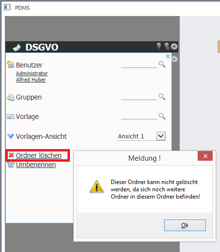
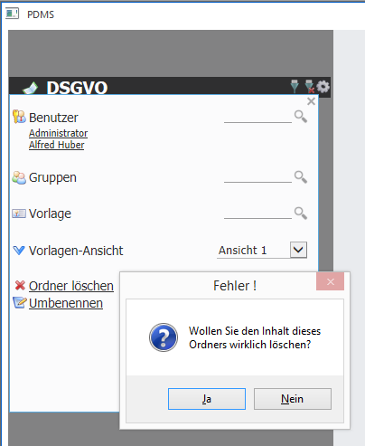
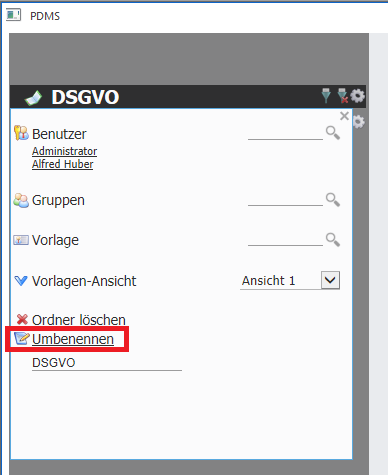

Möchte man einen Ordner (Buch, Kapitel, Subkapitel) löschen, so ist dies mittels "Ordner löschen" möglich. Zu beachten ist, dass ein Ordner immer nur dann gelöscht werden kann, wenn sich in den Unterebenen keine Ordner befinden. Zum Beispiel soll das Buch DSGVO gelöscht werden. Dieses Buch enthält sowohl das Kapitel "Allgemein" und dieses wiederrum das Sub-Kapitel "Stammdaten DSGVO". Versucht man nun direkt das Buch DSGVO zu löschen, erfolgt die folgende Meldung:

Erst nachdem das Sub-Kapitel und das Kapitel gelöscht wurde, kann auch das Buch gelöscht werden:

Möchte man den Namen eines Buchs ändern, so ist dies mittel "Umbenennen" möglich. Dazu muss man auf den Eintrag klicken und erhält dann ein "Edit-Feld" wo der neue Name vergeben werden kann. Nach Bestätigung via "Enter", wird diese Änderung übernommen.
